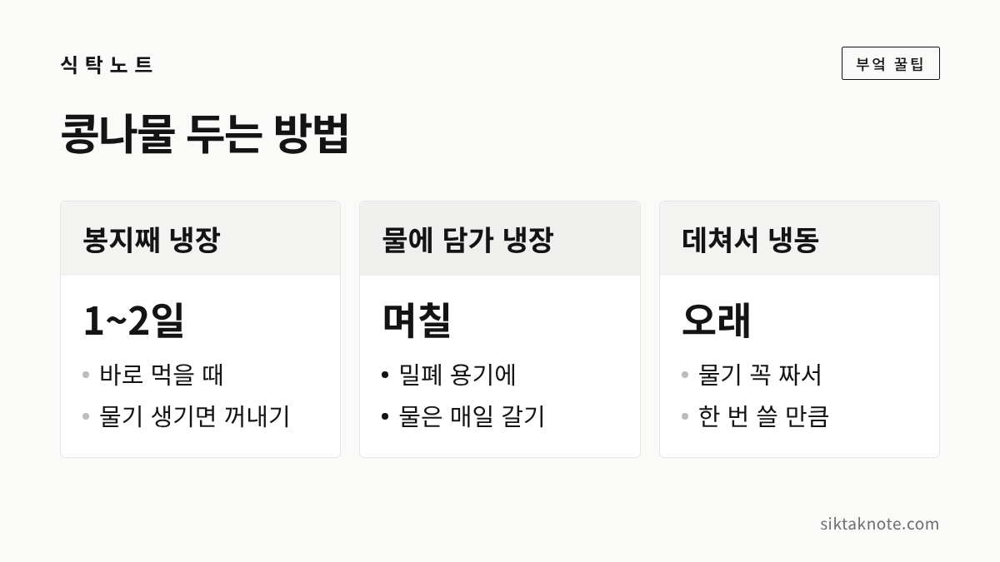
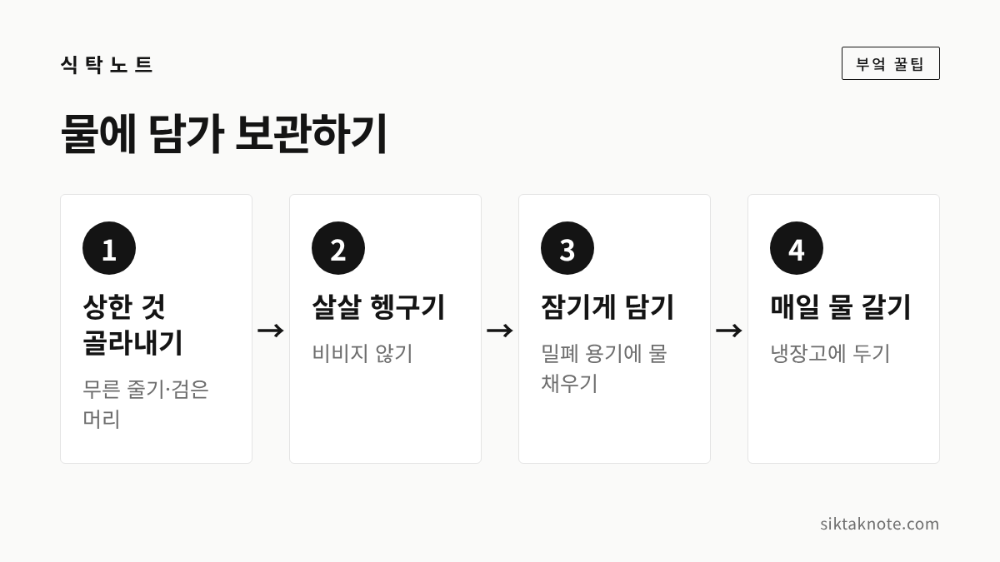

콩나물 보관법 — 물에 담가 냉장, 데쳐서 냉동, 비린내 없이 데치는 뚜껑 요령

3줄 요약
- 하루이틀 안에 먹을 콩나물은 봉지째 냉장해도 괜찮습니다.
- 며칠 둘 거라면 물에 담가 냉장하고, 물은 매일 갈아 주세요.
- 데칠 때는 뚜껑을 처음부터 닫든 열든 한 가지로 정하고, 중간에 여닫지 않는 게 좋습니다.

콩나물은 값이 부담 없어서 장 볼 때 한 봉지씩 쉽게 담게 되는데요. 국 한 번 끓이고 나면 반쯤 남아서, 며칠 뒤 열어 보면 줄기가 물러지고 시큼한 냄새가 나 있을 때가 많습니다. 콩나물은 보관 기간이 짧은 채소라서, 사 온 날 어떻게 두느냐에 따라 차이가 꽤 납니다.
콩나물이 금방 무르는 이유
콩나물은 콩에서 막 싹을 틔운 상태라 수분이 많고 여린 채소입니다. 언론 보도에 소개된 농촌진흥청 설명에 따르면, 콩나물은 저장성이 낮아 온도 변화와 수분에 특히 민감하다고 하는데요. 냉장고 안에서도 계속 숨을 쉬기 때문에, 꽉 막힌 봉지 안에 열과 물기가 쌓이면 금방 상하기 쉽습니다.
그래서 콩나물 보관의 핵심은 "차갑게, 그리고 고인 물기 없이"입니다. 냉장고에 넣는 것만으로는 부족하고, 봉지 안에 맺힌 물방울까지 챙겨야 하는 이유죠.

하루이틀이면 봉지째 둬도 됩니다
오늘 내일 안에 다 먹을 거라면 사 온 봉지 그대로 냉장고에 넣어도 괜찮습니다. 다만 봉지 안에 물방울이 맺혀 있으면 키친타월을 한 장 넣어 물기를 받아 두는 게 좋겠습니다.
반쯤 쓰고 남은 콩나물을 다시 봉지째 넣어 두는 경우가 많은데요. 한 번 연 봉지는 손이 닿고 물기도 생겨서 더 빨리 상합니다. 남은 콩나물은 아래처럼 물에 담가 두시는 편이 낫습니다.

며칠 둘 거라면 물에 담가 냉장

이틀 넘게 둘 거라면 밀폐 용기에 물을 채워 콩나물을 담가 두는 방법이 많이 쓰입니다. 콩나물이 마르지 않고 아삭함이 오래가거든요.
- 무른 줄기나 머리가 검게 변한 것, 껍질은 골라냅니다.
- 찬물에 살살 헹궈요. 세게 비비면 줄기가 상처를 입어 더 빨리 무릅니다.
- 밀폐 용기에 담고 콩나물이 잠기도록 찬물을 붓습니다.
- 냉장고에 넣고, 물은 매일 갈아 주세요.
물을 갈지 않고 며칠 두면 그 물이 오히려 세균이 늘어나기 좋은 환경이 될 수 있다고 하는데요. 물이 뿌옇게 흐려지거나 냄새가 나기 시작했다면 바로 갈아 주셔야 합니다. 이렇게 해도 콩나물은 오래 가는 채소가 아니라서, 며칠 안에 먹는다고 생각하시는 게 좋겠습니다.

오래 둘 거라면 데쳐서 냉동
며칠 안에 다 못 먹을 것 같다면 데쳐서 얼려 두시면 편합니다.
- 콩나물을 씻어 끓는 물에 살짝만 데칩니다. 냉동했다가 다시 익히게 되니 덜 익었다 싶을 때 건져요.
- 찬물에 헹궈 식히고, 물기를 꼭 짭니다. 물기가 많으면 얼면서 서로 엉겨 붙어요.
- 한 번 쓸 만큼씩 나눠 지퍼백에 납작하게 담고, 공기를 빼서 얼립니다.
- 봉지에 날짜를 적어 두면 먼저 얼린 것부터 쓰기 좋습니다.
얼렸던 콩나물은 녹으면서 아삭함이 줄어듭니다. 그래서 무침보다는 국, 찌개, 콩나물밥, 볶음처럼 다시 끓이거나 익히는 요리에 쓰시는 게 잘 어울립니다. 국을 끓일 때는 녹이지 않고 언 채로 넣으면 됩니다.

비린내 안 나게 데치는 뚜껑 요령
콩나물을 데치다 비린내가 나서 당황하신 적 있으시죠. 콩에 들어 있는 효소 때문에 덜 익은 상태에서 비린내가 나기 쉽다고 알려져 있는데요. 그래서 흔히 이렇게 데치라고 합니다.
- 뚜껑은 한 가지로 정하기: 처음부터 닫았으면 다 익을 때까지 열지 말고, 열고 시작했으면 끝까지 열어 둡니다. 중간에 여닫는 게 가장 비린내가 나기 쉬운 방법이라고 알려져 있습니다.
- 충분히 익히기: 덜 익은 콩나물에서 비린 맛이 나니, 줄기가 투명해지고 머리 쪽 콩까지 익었는지 하나 건져 맛을 보세요.
- 찬물에 헹구기: 무침용이라면 데친 뒤 바로 찬물에 헹궈 열기를 빼 주면 아삭함이 살아 있습니다.
한국민족문화대백과사전에는 콩나물밥을 지을 때 콩나물을 쌀 위에 얹으면 비린 맛이 나고 수분도 빠져 맛이 없다고 적혀 있는데요. 양념한 콩나물을 솥 바닥에 깔고 그 위에 쌀을 얹어 밥을 지으라고 안내합니다. 콩나물밥 하실 때 같이 기억해 두시면 좋겠습니다.
싱싱한 콩나물 고르는 법
보관을 잘하려면 처음부터 싱싱한 걸 고르는 게 먼저인데요. 흔히 이런 콩나물이 좋다고 합니다.
- 머리(콩) 부분이 노랗고 통통하며, 검거나 갈색으로 변한 게 없는 것
- 줄기가 하얗고 윤기가 돌며, 눌렀을 때 물컹하지 않은 것
- 봉지 안에 물이 많이 고여 있지 않은 것
- 봉지를 열었을 때 시큼한 냄새가 나지 않는 것
먹으면 안 되는 콩나물도 알아 두세요. 보도에 소개된 식품의약품안전처 안내에 따르면, 냉장 보관 중이라도 색이 변하거나 미끈한 점액이 생기거나 쉰 냄새가 나는 콩나물은 먹지 말아야 합니다. 몇 가닥만 그렇다면 골라내도 되지만, 봉지 전체가 미끈거리고 냄새가 난다면 정리하시는 게 안전합니다.
자주 묻는 질문
콩나물을 생으로 얼려도 되나요?
생으로 얼려서 국에 바로 넣는 분들도 있는데요. 데쳐서 물기를 짜고 얼리는 쪽이 부피도 줄고 엉겨 붙지 않아 나눠 쓰기 편합니다.
콩나물 머리가 초록색이 됐어요.
콩나물은 빛을 받으면 머리 쪽이 초록빛을 띠기도 합니다. 무르거나 냄새가 나지 않는다면 대개 먹는 데 문제는 없다고 알려져 있습니다. 보관할 때는 빛이 덜 드는 곳에 두세요.
숙주나물도 같은 방법으로 보관하면 되나요?
숙주나물은 녹두의 싹이라 콩나물과는 다른 작물이지만, 여리고 금방 무른다는 점은 비슷합니다. 물기를 잘 관리하고 빨리 드시는 게 가장 좋습니다.
콩나물국에는 무 한 토막, 대파 한 줌이 들어가면 맛이 한층 시원해지는데요. 무 보관법과 대파 보관법도 함께 봐 두시면 장 봐 온 날 한 번에 정리하기 좋습니다.